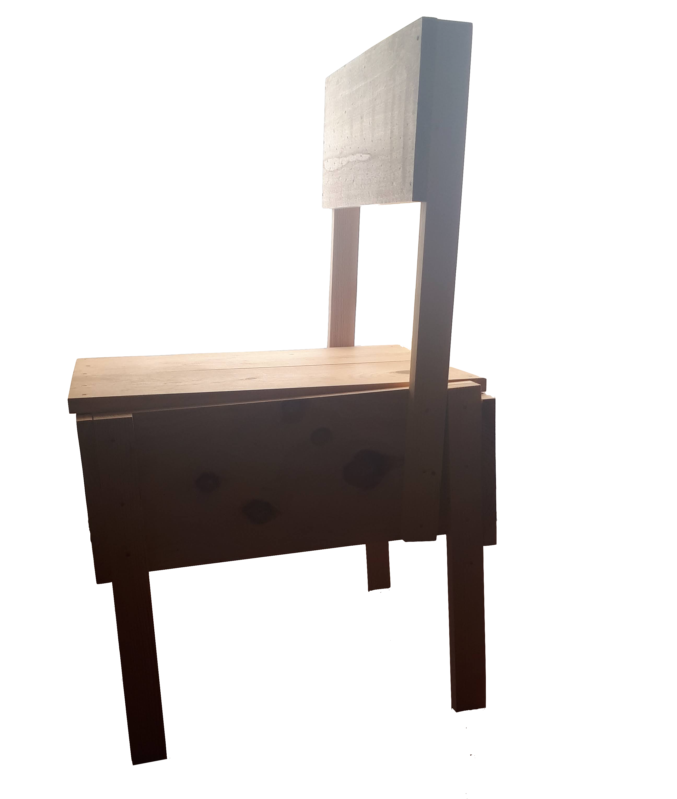

Hi, my name is João Costeira. I'm a Software Engineer based in Braga, Portugal.
I studied at Universidade do Minho where I finished both my degree and master’s.
In the last few years, I've been working on the development of semantic driven applications, usually within a historical domain. More recently, I switched gears and most of my work has been in the web development domain.
The Foundling Wheel Archive
The Foundling Wheel is a digital platform supported by a knowledge repository.
Initially the application spellchecks documents written in old Portuguese (Nineteenth Century) and restores unreadable sections.
Then a processing pipeline composed of a named entity recognition, relation extraction, entity linking and ontology fully automate the information processing / management of the underlying knowledge graph.
Role: Developed the entire project.
Main technologies used:
- Python
- Spacy
- OwlReady 2
- HermiT
- Hunspell
- Fuzzywuzzy
- Django
- Bootstrap
Spickles
Spickles is a movie recommendation app that provides recommendations not only for a specific user but also assists the decision process for an arbitrary sized group.
By creating a group, the application takes in consideration the personal preferences of each member and potentially added filters. Over the generated pool of movies, each member is able to play via a Tinder style interface until an unanimous movie is chosen.
Role: Python Developer and member of the Machine Learning engine development. In total the team was composed of 9 members.
Main technologies used:
- JavaScript
- Python
- React Native
- Django
- Node JS
- Scikit-Learn
- Scipy


And Lots More
A bunch of smaller projects are available on my Github. Furthermore, my Github contains an up-to-date version of my C.V. and my Master Thesis.
- Besides programming, I have lots of interests, including drawing, design, music production and much more.
- Here's a small showcase of some stuff random that I have made.
- 
-

Faces
-